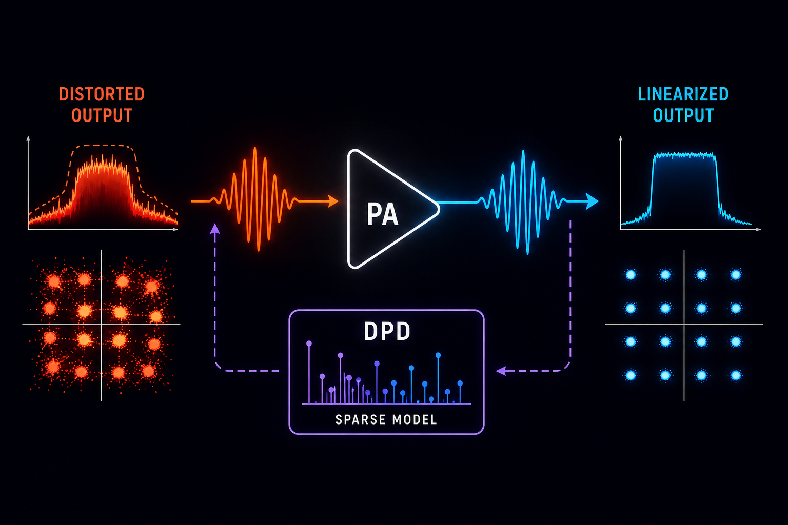

Preconditioning the Regression of Power Amplifier Behavioral Models and Digital Predistorters
Improves the numerical stability of regression models used to linearize RF power amplifiers.
Telecommunications
Work on making RF transmitters cleaner and more efficient through behavioral modeling, sparse regression, numerical conditioning, and signal-processing methods for digital predistortion.
Back to researchPapers
These papers focus on power-amplifier behavioral modeling and digital predistortion, especially regression conditioning, sparse feature selection, matching pursuit, and compact models for practical wireless transmitters.
Improves the numerical stability of regression models used to linearize RF power amplifiers.
Selects compact behavioral-model terms with sparse regression while preserving model fidelity.

Placeholder for the next predistortion result, ready for the final title and short abstract.